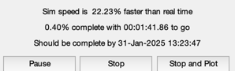
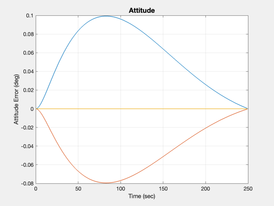
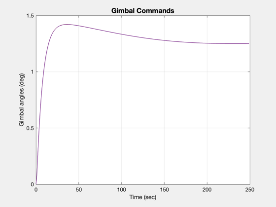
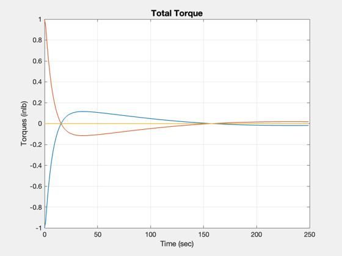

Tests a gimbaled thruster stationkeeping control system.
This is the type of system used with the Shuttle OMS engines. ------------------------------------------------------------------------- See also PIDMIMO, Plot2D, TimeGUI, RK4, GimbalControl -------------------------------------------------------------------------
Contents
- Global for the TimeGUI
- Controller sample period
- PID Controller
- Spacecraft properties
- The 2 inch offset will cause a disturbance
- Control moment arms of the gimbaled thrusters
- Control torque matrix
- Pseudo inverse to distribute control
- Control state
- Disturbance torque matrix
- Plot Arrays
- Initial state
- The simulation
- Initialize the time display
- Limit the arrays to the actual length of the sim
- Plot
%-------------------------------------------------------------------------- % Copyright (c) 1995-2006 Princeton Satellite Systems, Inc. % All rights reserved. %--------------------------------------------------------------------------
Global for the TimeGUI
%------------------------ global simulationAction simulationAction = ' ';
Controller sample period
%--------------------------
tSamp = 0.5;
nSim = 250;
inr = [40000,0,0;0,50000,0;0,0,60000];
PID Controller
%--------------- zeta = 1.5*ones(3,1); omega = [0.1;0.1;0.1]; tauInt = 10*ones(3,1); omegaR = 5.0*ones(3,1); [aC,bC,cC,dC] = PIDMIMO(inr,zeta,omega,tauInt,omegaR,tSamp,'Delta');
Spacecraft properties
%----------------------- thrust = 0.5; invInr = inv(inr); % Position vectors of gimbaled thrusters
The 2 inch offset will cause a disturbance
%-------------------------------------------
r1 = [ -12 -12 45 ];
r2 = [ 10 10 45 ];
Control moment arms of the gimbaled thrusters
%----------------------------------------------
b1 = [ r1(3) 0; 0 -r1(3); -r1(1) r1(2) ];
b2 = [ r2(3) 0; 0 -r2(3); -r2(1) r2(2) ];
Control torque matrix
%----------------------
bT = thrust*[ b1 b2 ];
Pseudo inverse to distribute control
------------------------------------
pB = pinv(bT);
Control state
%--------------
xC = [ 0 0 0 0 0 0 ]';
Disturbance torque matrix
-------------------------
tDist = thrust*[r1(2)+r2(2);-(r1(1)+r2(1));0]
tDist =
-1
1
0
Plot Arrays
%------------
xPlot = zeros(3,nSim);
uPlot = zeros(4,nSim);
dPlot = zeros(3,nSim);
Initial state
%--------------
x = [ 1 0 0 0 0 0 0 ]';
The simulation
%---------------
t = tSamp*0:(nSim-1);
Initialize the time display
%---------------------------- [ ratioRealTime, tToGoMem ] = TimeGUI( nSim, 0, [], 0, tSamp, 'TGimbal' ); for k = 1:nSim % Display the status message %--------------------------- [ ratioRealTime, tToGoMem ] = TimeGUI( nSim, k, tToGoMem, ratioRealTime, tSamp ); % Controller %------------ att = 0.5*x(2:4); [u,xC,y] = GimbalC(aC,bC,cC,dC,pB,xC,att); tExt = bT*u + tDist; % Plot Arrays %------------ xPlot(:,k) = x(2:4); uPlot(:,k) = u; dPlot(:,k) = tExt; % Dynamics %--------- x = RK4('FRB',x,tSamp,t(k),inr,invInr,tExt); % Time control %------------- switch simulationAction case 'pause' pause simulationAction = ' '; case 'stop' return; case 'plot' break; end end
Limit the arrays to the actual length of the sim
%-------------------------------------------------
j = 1:k;
t = t(j);
Plot
%----- Plot2D(t,(360/pi)*xPlot(:,j),'Time (sec)','Attitude Error (deg)','Attitude') Plot2D(t,uPlot(:,j)*180/pi,'Time (sec)','Gimbal angles (deg)','Gimbal Commands') Plot2D(t,dPlot(:,j),'Time (sec)','Torques (inlb)','Total Torque') %-------------------------------------- % $Date$ % $Id: 9886f6580317ad4f30553798a4bbc63d7e2de8dc $  